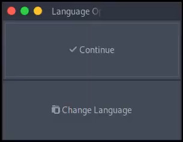
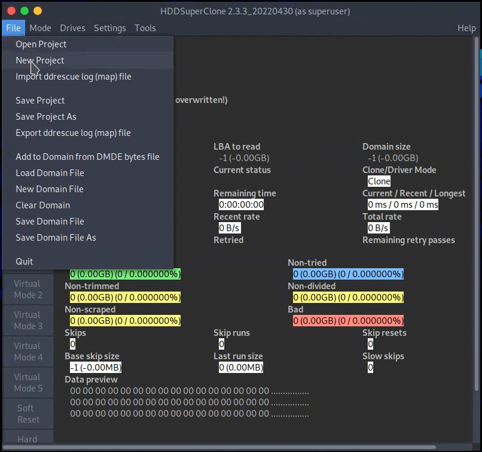
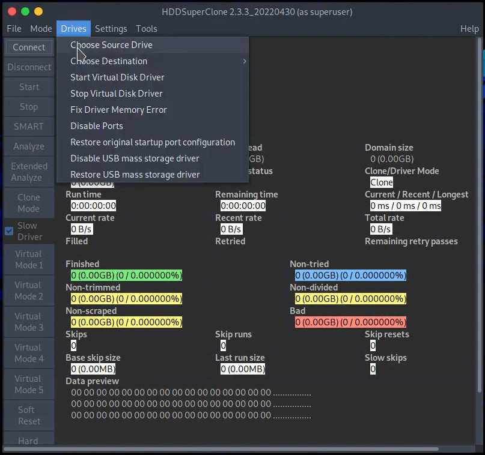
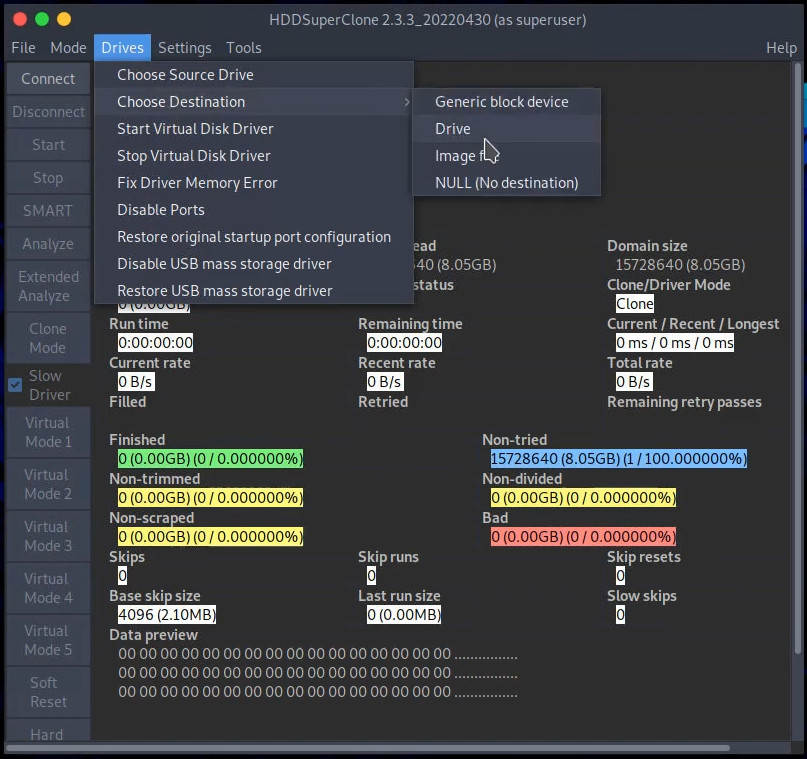
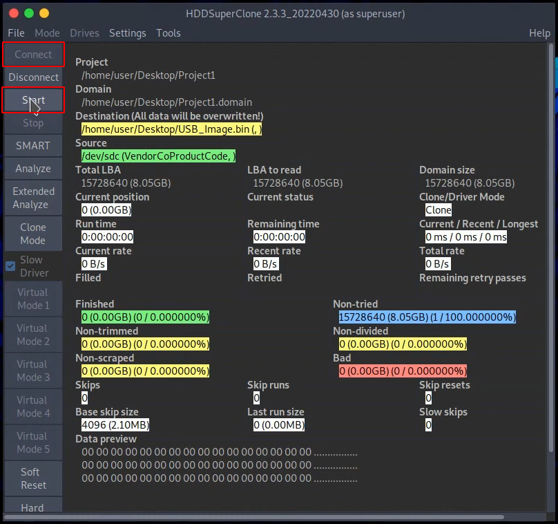

Recuperando dados de uma unidade de armazenamento
Introdução
Assim como todo componente do seu computador, os dispositivos de armazenamento (HDs, SSDs, Pendrives, etc.) tem um limite de vída útil (mais ou menos 5 anos em atividade para um HD e de 3.000 e 100.000 usos para uma célula de armazenamento dentro dos chips dos SSDs variando conforme o modelo de chip), porém, muitas pessoas tratam os dados contidos nesses dispositivos como se fossem eternos e não deteriorassem, mas a verdade é uma só: Os seus dados estão tão saudáveis quanto os dispositivos que os carrega!
Existem diferenças da maneira que os HDs e SSDs se deterioram, em resumo os HDs não tem limite de gravação e leitura mas tem limites de tempo de operação (quanto tempo fica em processo de gravação, quanto tempo fica em processo de leitura, qual temperatura atinge durante a gravação/leitura e por quanto tempo permanece nessa temperatura, se é atingido por algum impacto ou vibração e por aí vai), já os SSDs não tem limite em termos de operação porém tem limite em termos de regravação (ou seja, dados gravados num SSDs podem durar mais e ele pode operar em leitura ad infinitum mas o "apaga, escreve, apaga, escreve, apaga, escreve de novo" acaba com um SSD fazendo que com o tempo as células gastas "esqueçam" os dados gravados).
Também pode ser que aconteça alguma perda de energia durante um processo de gravação, ou mesmo a falha de algum programa (ou mesmo do usuário) que acabe deletando os arquivos, partições ou até mesmo a tabela de partição toda de uma vez só (eu tô rezando pra você que foi usar o Ventoy e formatou o seu HD de backup sem querer...).
Então se você está aqui nessa página as chances são que alguma merda aconteceu, seja por sua falta de conhecimento ou descuido de sua parte ou apenas azar mesmo, então antes de continuarmos com o procedimento aqui vai algumas dicas para que esse problema, seja lá qual for, não ocorra novamente:
- Sempre verifique a condição das suas unidades de armazenamento (seja com Gnome Disks ou Crystal Disk Info), qualquer coisa que não seja "GOOD, 0 bad blocks" é inaceitável (se houver 1 bad block sequer substitua essa unidade o quanto antes!);
- Não manipule dados sensíveis (como documentos importantes) no seu computador em períodos de chuva ou com risco de queda de energia (e até uma tomada frouxa cabe nesse alerta aqui);
- Sempre atualize o firmware do seus SSD's (tanto faz se eles são SATA ou NVME) ANTES de instalar o sistema (ou formato de arquivo) desejado, se não pelo menos faça backup do seus dados e atualize o firmware;
- Caso você precise realizar alguma operação de particionamento ou formatação, desligue o computador e desconecte TODOS os dispositivos que você não deseja formatar antes de realizar a operação;
- HDs externos não devem ser tratados como unidades portáteis, HDs são extremamente sensíveis a vibração e se você é do tipo que vai pra cima e pra baixo com HD numa case e saída USB3.0 na mochila, seus dados cedo ou tarde vão virar ovos mexidos;
- Utilize sistemas operacionais e formatos de arquivo compatíveis em dispositivos seguros sempre que for lidar com os seus dados, exemplo:
- Não tenha um disco de backup em NTFS para o seu Linux ou MacOS, pois o suporte ao NTFS para operações no Linux não é perfeito (e o mesmo serve para acessar EXT4 através do Windows e Mac ou acessar APFS através do Linux e Windows)!
- Não tenha um pendrive em FAT32 que você conecta em todo computador como dispositivo de backup pois se esse pendrive pegar vírus ou se o seu sistema pegar vírus você vai perder tudo!
- Não faça backup utilizando o cartão SD genérico que você tirou do celular, cartões SDs já são dispositivos bem menos confiáveis e aquele que você compra no camelô então nem se conta!
- Em resumo: Sempre use um dispositivo com menos chance de erros, em uma formatação que possa ser lida nativamente pelo sistema utilizado para fazer o backup (a menos que seja um ZoL), garanta a segurança do sistema que manipula os dados pois uma vez acessíveis ao sistema eles estão tão seguros quanto o sistema que os acessa!
Uma vez que você entendeu tudo isso podemos seguir com a tentativa de recuperação dos dados, sim, tentativa, pois não existe garantia alguma nesse processo, tudo vai depender do estrago, das ferramentas utilizadas e da sua sorte, mas antes você precisa saber o básico sobre uma unidade de armazenamento.
O básico que você precisa saber sobre uma unidade de armazenamento
Quando você apaga um arquivo no computador, não significa que esse dado foi apagado no disco, na verdade quase nunca esse dado vai ser imediatamente apagado no disco, isso acontece devido a maneira que os dispositivos funcionam, e para entender isso você precisa entender 3 coisas: Tabelas de partição, sistemas de arquivo e blocos.
Tabela de partição
Em resumo a tabela de partição é um índice gravado no começo do disco e funciona como se fosse um "guia" que do que existe dentro do HD (ou SSD ou pendrive e por aí vai), ela aponta quais sistemas de arquivo estão gravados, onde cada sistema de arquivo começa e termina, as condições daquela partição (se ela deve ser ocultada ou se ela é extensão de outra) e por aí vai.
Sistemas de arquivo
Grosso modo, sistemas de arquivo são espaços no disco com um método e estrutura especificos para controlar os dados no disco, por exemplo, quando você formata um pendrive em FAT32 você basicamente prepara uma área do pendrive para gravar e ler arquivos de uma determinada maneira. É como se você delimitasse uma área para obras e colocasse aquela área na responsabilidade de um mestre de obras numa construção, mestre esse que determina como as coisas entram naquela área, como elas saem daquela área e de que forma a produção é feita.
Blocos
Já os blocos são um "pedaço" do HD que recebem a gravação fisicamente, basicamente são onde os dados ficam de fato.
Então por qual razão o arquivo permanece no disco mesmo depois de apagado?
É simples, ao invés de o seu computador apagar o arquivo em todos os blocos, ele avisa ao mestre de obras (sistema de arquivos): "Seja lá o que existia nesse espaço desse arquivo X considere vazio, caso você precise de gravar algo basta demolir isso e gravar por cima". Então a menos que algum outro arquivo utilize aquele espaço depois dele ser marcado para "demolição", o arquivo permanece lá! Então lembre-se: Caso você tenha apagado algo que não deveria no HD (ou qualquer outro dispositivo), cesse o uso do dispositivo IMEDIATAMENTE, desconecte do computador e não reconecte até ter uma unidade reserva para fazer o backup de dados!
Quem utiliza Archlinux já deve ter reparado que em certo momento da instalação você faz a tabela de partições do dispositivo e em outro momento você formata aquele espaço da partição com o formato de arquivo, o que isso significa? Significa que uma área descrita no disco como Partição 1 - FAT32 pode não conter nada de FAT32 lá e ser inoperável, ou também você pode perder a tabela da partições e aquele espaço que deveria ter um FAT32 fica invisível pro sistema.
O ponto é: Para que seu arquivo seja lido pelo sistema de maneira correta ele precisa de
- Uma tabela de partição descrevendo quais as partições existem no dispositivo;
- Que as partições também precisam estar formatadas nas delimitações corretas informadas pela tabela de partições;
- Que os arquivos no seu disco estejam inteiramente gravados em blocos funcionais;
Então, para recuperar seus arquivos depende do estrago que foi feito:
- Você deletou a partição? Então vai ter que reparar a tabela de partição para informar novamente que existe um espaço alí com um sistema de arquivo.
- Você deletou a tabela de partições? Então você vai ter que buscar no dispositivo, bloco a bloco onde se localiza fisicamente aquele sistema de arquivos para recuperar seus dados.
- Você gravou seus arquivos em blocos defeituosos ou continuou usando o disco após ter perdido os arquivos? Então você se fod**!
Então como recuperar meus arquivos?
Via de regra, todo processo de recuperação de dados funciona da mesma maneira: As ferramentas de recuperação de arquivos leem a unidade (ou unidades) ou o arquivo de imagem (ou arquivos de imagem), procurando partes dos metadados do sistema de arquivos e montando um sistema de arquivos na memória, então eles usam isso como um mapa para extrair os dados do dispositivo(s) ou imagem(s) e permitem o acesso ou mesmo regravam isso em outro dispositivo(s) ou imagem(s).
Se e como os arquivos serão recuperados sempre depende do estado dos dispositivos e dos programas a serem utilizados, embora eu seja entusiasta de softwares livres eu tenho que ser sincero: Não há como comparar o desempenho de uma ferramenta feita por necessidade para uso individual e casos simples com as de um time de programadores especialistas em recuperação de dados, essas ferramentas usam algoritmos muito diferentes, todos proprietários. Essas ferramentas lidam com situações diferentes de maneiras diferentes e certamente não fornecem os mesmos resultados em todas as circunstâncias. Então se você tem algo muito importante para recuperar e dispositivos muito degradados, compre uma licença (Sim! Compre a por** de uma licença e não arrisque seus dados com programas craackeados!) de um UFS Explorer, R-Studio ou DMDE e boa sorte, esse tutorial definitivamente não é pra você.
Se você apagou uma partição ou tabela de partições e tem um hd em boas condições ou que apenas começou a dar problemas em setores específicos (nada de disco cantando ou cabeçote fisgando), se você ainda tem acesso aos seus dados sem problemas aí sim esse tutorial serve pra você.
O que é necessario para recuperar?
Bom, primeiramente você precisa passar a ver o HD (ou qualquer outro dispositivo a ser recuperado) como um paciente com um problema desconhecido: Quando menos você mexer nele antes de ter a completa compreensão do problema e a solução definitiva melhor é!
O melhor a se fazer depende da situação, se o HD não tem arquivos excluídos a serem recuperados, se não há partições deletadas e a tabela de partição está intacta e você só precisa mover os arquivos para uma unidade saudável, o ideal é:
- Adquirir um HD novo para substituição do HD antigo;
- Clonar o conteúdo do HD antigo para o novo;
Porém, se você perdeu a partição de arquivos ou mesmo a tabela de partições e/ou apagou arquivos que não deveria então o melhor a se fazer é:
- Adquirir um HD novo (chamemos de HD substituto) para substituição do HD antigo (chamemos de HD paciente);
- Adquirir um segundo HD novo (chamemos de HD de análise) com pelo menos o dobro do espaço do hd paciente, espaço esse que será usado em parte para salvar a imagem do hd paciente e análise do conteúdo e em parte para recuperação de dados do HD paciente;
- Clonar o conteúdo do HD paciente para uma imagem de disco no sistema de arquivos do HD de análise;
- Ler a imagem de disco gravada no sistema de arquivos HD de análise, recuperar os dados para o sistema de arquivos do hd de análise e só então mover os arquivos para o HD de substituto;
Então, vamos lá?
Caso 1 - Recuperação de dados de disco para disco
Bom, a primeira coisa a saber é que esse procedimento deve ser feito pelo Linux, de preferência Debian ou algum derivado (como o Ubuntu). Existem diversas razões técnicas pra isso aqui que eu não entrarei em detalhes, então antes de mais nada instale o Linux em alguma unidade e que não seja nem o HD substituto e muito menos o HD paciente!
Uma vez que você tenha o Linux instalado acesse o site do HDDSuperClone, clique em Downloads Area e baixe a pasta HDDSuperClone. Instale o pacote hddsuperclone_2.3.3.pro-1_amd64.deb (ou i386.deb para 32 bits).
Abra um terminal de digite o comando:
sudo hddsuperclone
Você verá essa janela:
Basta clicar em Continue.
Para utilizar o programa precisamos primeiro criar um projeto, selecione então File > New Project para criá-lo e por padrão salve na pasta Documentos com o nome Projeto1, esse arquivo será usado pelo programa para acompanhamento de progresso da recuperação e informações a respeito dos seus dados.
Agora selecionaremos o Drive de origem (ou seja, o drive que será lido, o paciente!), para isso selecione Drivers > Choose Source Drive, clique no disco que deseja recuperar e depois clique em OK.
Por fim selecionaremos o Drive de destino (ou seja, o drive que será gravado, o substituto!), para isso selecione Drivers > Choose Destination > Drive, clique no disco que deseja usar como substituto e depois clique em OK.
Se tudo estiver correto, para iniciar o processo selecione Connect e em seguida Start e aguarde o fim do procedimento.
Caso 2 - Recuperação de dados em caso de perda de arquivos, partições ou tabela de partição
Para o seu caso a única diferença em comparação com o exemplo acima é que você precisa antes de mais nada formatar o HD de análise (de preferência em EXT4), e em seguida montar a partição do HD de análise para receber a imagem, e ao invés de selecionar Drivers > Choose Destination > Drive (para gravar a leitura em disco) você vai selecionar Drivers > Choose Destination > Image file (para gravar a leitura como arquivo de imagem) e salvar na raiz da partição do HD de análise como imagem.bin. Também crie na raíz do HD de análise uma pasta com o nome de Arquivos Recuperados.
Uma vez que a imagem esteja completamente copiada, instale o testdisk com o comando:
sudo apt install testdisk
Abra um terminal na raiz do HD de análise, e faça o testdisk carregar a imagem com o comando:
testdisk imagem.bin
Ele vai mostrar uma tela com as seguintes opções:
Select a media (use Arrow keys, then press Enter):
> Imagem de disco.bin - XXXX MB / XXXX MB
> [Proceed][Quit]
Com as setas ↑ ↓ você seleciona a imagem, com as ← → você a seleciona opção e Enter confirma.
Selecione então a imagem desejada e depois selecione [ Proceed ]
Então você vai uma tela para seleção de tabela de partição como o exemplo abaixo:
Please select the partition table type, press Enter when done.
[Intel] Intel/PC partition
[EFI GPT] EFI GPT partition map (Mac i386, some x86_64...)
[Humax] Humax partition table
[Mac] Apple partition map (legacy)
[None] Non partitioned media
[Sun] Sun Solaris partition
[Xbox] Xbox partition
[Return] Return to disk selection
Hint: "TIPO" partition table type has been detected.
Via de regra, selecione o que está marcado TIPO para você
Partition Start End Size in sectors
> XXXX XXXX XXXX XXXX
[Type][Image creation][Quit]
Selecione [Quit] para ir par ao menu principal
[ Analyse ] Analyse current partition structure and search for lost partitions
[ Advanced] Filesystem Utils
[ Geometry ] Change disk geometry
[ Options ] Modify options
[ Quit ] Return do disk selection
No menu principal selecione a opção [Analyise]
Partition Start End Size in sectors
> XXXX XXXX XXXX XXXX
[Quick Search]
Para fazer uma pesquisa rápida selecione a opção [ Quick Search ] e aguarde o fim do procedimento
Vamos supor que você tenha perdido uma partição NTFS de nome BACKUP, ela vai aparecer aqui mais ou menos assim:
Partition Start End Size in sectors
> P NTFS XXXX XXXX [BACKUP]
Keys T: change type, P: list files,
Enter: to continue
Caso a partição desejada não tenha sido encontrada, aperte q e depois selecione opção [ Deeper Search ] e aguarde o fim do procedimento
Provavelmente muitas partições serão encontradas após um Deep Search, tenha a certeza de selecionar a partição desejada corretamente!
Vamos supor que você encontrou a partição desejada, coloque o cursor sobre ela e para recuperar algum arquivo desse espaço aperte P para listar os arquivos
dr-xr-xr-x 0 0 0 15-Feb-2005 .
dr-xr-xr-x 0 0 0 15-Feb-2005 ..
> dr-xr-xr-x 0 0 0 15-Feb-2005 Pasta1
dr-xr-xr-x 0 0 0 15-Feb-2005 Pasta2
Use Right to change directory, h to hide Alternate Data Stream
q to quit, : to select the current file, a to select all files
C to copy selected files, c to copy current file
Nota: Aqui essa interface segue as mesmas convenções da navegação do Linux . é diretório atual, .. é diretório acima.
E aqui basta navegar pela lista de arquivos e selecionar o que deseja, os comandos são:
: seleciona arquivos isoladamente, a seleciona todos os arquivos, → para entrar numa pasta e ← para sair da pasta.
Pressione C para copiar os arquivos selecionados ou c para copiar o arquivo marcado pelo cursor.
Assim que tiver selecionado o(s) arquivo(s) desejado(s), e o tipo de cópia a ser feita (pelos arquivos marcados ou o que está selecionado pelo cursor) basta navegar até a pasta Arquivos Recuperados na raiz do HD de análise, confirmar a cópia e aguardar o fim do procedimento, ao fim pressione Q para sair.